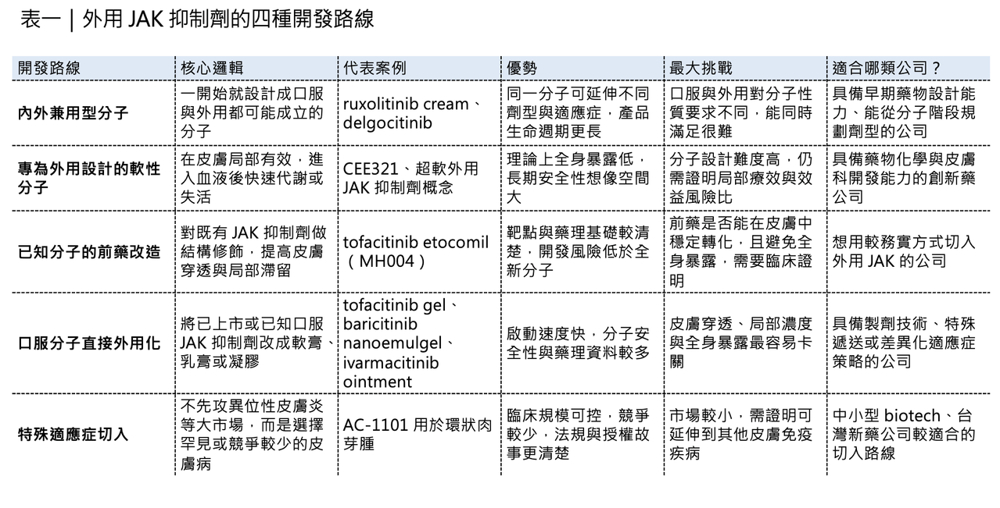
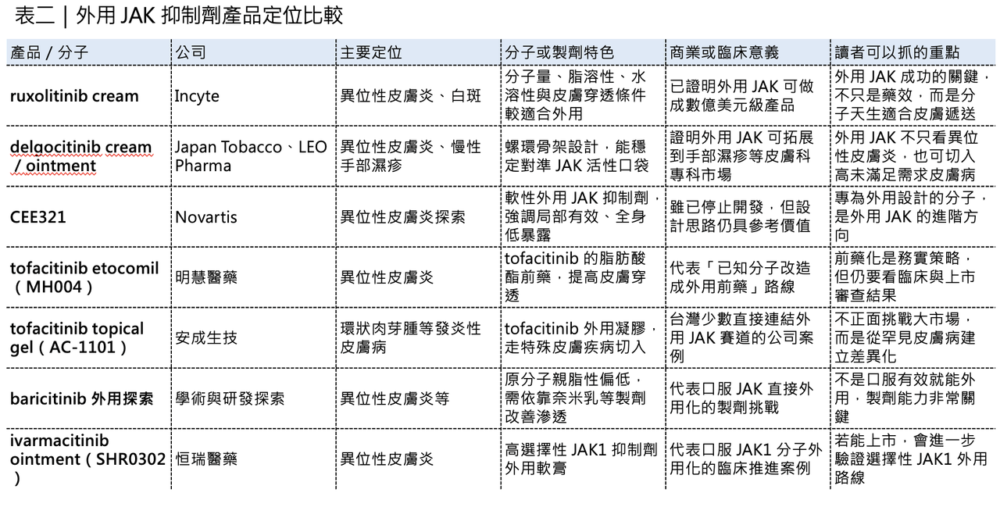

外用 JAK 抑制劑正在成為皮膚科新藥開發裡最值得關注的方向之一。
過去提到 JAK 抑制劑，多數人想到的是口服藥。例如 tofacitinib、baricitinib、upadacitinib、abrocitinib 這類藥物，已經在類風濕性關節炎、異位性皮膚炎、乾癬性關節炎、潰瘍性結腸炎、圓禿等自體免疫與發炎疾病中建立市場。
📌 但外用 JAK 抑制劑是另一個故事。
它的核心不是「JAK 抑制劑能不能抗發炎」，而是：這個分子能不能穿過皮膚，又不要大量進入全身循環。
這也是為什麼雖然全球已經有許多口服 JAK 抑制劑上市，但真正成功做成外用藥的品種並不多。目前國際市場最具代表性的外用 JAK 抑制劑，主要是 ruxolitinib cream 與 delgocitinib cream／ointment。
Ruxolitinib cream 的商品名是 Opzelura，由 Incyte 開發，是第一個獲美國 FDA 核准的外用 JAK 抑制劑，已用於異位性皮膚炎與非節段型白斑。2024 年，Opzelura 全年營收達 5.08 億美元，年增 50%，已經證明外用 JAK 抑制劑不只是皮膚科小眾產品，而是可以成為數億美元級商業品種。
Delgocitinib 則走出另一條路。它最早以 Corectim 在日本核准用於異位性皮膚炎，後來 LEO Pharma 推進 Anzupgo（delgocitinib cream），美國 FDA 已核准其用於成人中重度慢性手部濕疹。
這兩款產品讓外用 JAK 抑制劑的價值被重新看見。但它們也提醒產業一件事：不是所有 JAK 抑制劑，都適合直接做成外用藥。

01｜外用 JAK 抑制劑的真正難點，不是抑制 JAK，而是「皮膚遞送」
JAK 抑制劑的作用邏輯並不難理解。JAK 是細胞內傳遞發炎訊號的重要酵素。許多與異位性皮膚炎、白斑、手部濕疹、圓禿等疾病有關的發炎訊號，都會透過 JAK-STAT 路徑放大。因此，抑制 JAK，可以降低皮膚局部發炎、搔癢與免疫反應。
但外用藥開發的難點，不在於「能不能抑制 JAK」。真正困難的是藥物要先穿過皮膚最外層的角質層，再進入表皮與真皮，達到足夠局部濃度，同時又不能大量進入血液造成全身性副作用。
這是一個非常精細的平衡。
如果分子太親水，可能穿不過角質層；如果分子太親脂，可能卡在角質層或皮脂裡，進不到目標組織。如果分子太大，皮膚穿透力會不足；如果分子太穩定、進入血液後不容易清除，就可能帶來全身 JAK 抑制風險。
所以，理想的外用 JAK 抑制劑，需要同時滿足幾個條件：
📌 能溶解在製劑裡。
📌 能穿過角質層。
📌 能在皮膚局部維持有效濃度。
📌 進入血液後能快速清除或失活。
📌 不需要太複雜的遞送系統。
這也是 ruxolitinib 與 delgocitinib 成功的關鍵。它們不是單純因為「JAK 抑制效果強」才成功，而是因為分子本身具備外用開發的條件。

02｜Ruxolitinib cream 為什麼能成功？因為它天生適合內外兼用
Ruxolitinib 最早是以口服藥切入血液腫瘤與骨髓纖維化市場，商品名 Jakafi／Jakavi。但 Incyte 從藥物設計早期，就有意尋找既能口服、又有機會外用的分子。Ruxolitinib 剛好符合這個條件。
從外用藥角度來看，ruxolitinib 有幾個先天優勢。它分子量不大，低於 500 道爾頓；它具備適中的脂溶性與水溶性；它有足夠的皮膚穿透能力；它進入全身循環後清除相對較快；它不需要非常複雜的奈米載體或特殊遞送系統，就可以做成乳膏。
這一點非常重要。因為外用藥不只是要有效，還要穩定、可放大、成本合理、使用方便、皮膚耐受性好。越複雜的遞送系統，越可能增加製造難度、品質控制難度與法規審查風險。
Opzelura 的成功，某種程度上就是「分子選對了」。它不是把任何一個口服 JAK 抑制劑硬做成外用乳膏，而是選到一個物理化學性質本來就適合皮膚遞送的分子。這也是後來者最容易忽略的地方。外用 JAK 抑制劑的競爭，不是把一個已上市口服藥改成乳膏就結束了。
真正的問題是：這個分子本身離外用有多遠？
如果距離太遠，就需要靠前藥、促滲劑、奈米載體、微針或其他複雜製劑技術來補，這會讓開發風險明顯提高。
03｜Delgocitinib 的成功，則來自更精準的皮膚科分子設計
Delgocitinib 是另一個非常值得研究的案例。
它是泛 JAK 抑制劑，可以同時抑制 JAK1、JAK2、JAK3 與 TYK2。這代表它能阻斷多種皮膚發炎相關訊號，包括 IL-4、IL-13、IL-17、IL-22、IFN-γ 等。
但 delgocitinib 最有意思的地方，不只是抑制範圍廣，而是它的分子結構。Delgocitinib 具有一個相對剛性的螺環骨架。這種結構能把關鍵藥效團固定在較理想的位置，使其更精準地進入 JAK 激酶活性口袋。簡單說，它不是一個鬆散、自由旋轉很多的分子，而是被設計成更立體、更穩定、更能對準目標的結構。
這樣的分子設計有兩個好處：
📌 第一，受體結合效率更好。
📌 第二，理化性質更容易被控制。
Delgocitinib 的發展路徑也很有代表性。日本煙草公司保留日本市場權益，並將日本以外皮膚科外用權益授權給 LEO Pharma。後續 delgocitinib 在日本以 Corectim 用於異位性皮膚炎，在歐美則以 Anzupgo 用於慢性手部濕疹。
這說明外用 JAK 抑制劑不是只有異位性皮膚炎一個市場。慢性手部濕疹、白斑、圓禿、環狀肉芽腫、乾癬、慢性搔癢等皮膚免疫疾病，都可能成為後續開發方向。但前提仍然是同一件事：分子要能在皮膚局部有效，又要控制全身暴露。
04｜後來者第一條路：做「內外兼用」分子，但門檻很高
Ruxolitinib 與 delgocitinib 代表的是一種策略：一個分子同時具備口服與外用開發潛力。
這種路線的優點很明顯。如果口服成立，可以走全身性疾病；如果外用成立，可以切皮膚科局部市場。同一個分子可以延展不同劑型、不同適應症，產品生命週期更長，但這條路其實很難。因為口服藥與外用藥對分子的要求不完全相同。口服藥需要足夠吸收、足夠穩定、能進入全身循環；外用藥則希望能進入皮膚，但不要大量進入血液。
這兩個方向有時是衝突的。
📌 一個口服表現很好的分子，不一定適合外用。
📌 一個外用安全性很好的分子，也不一定適合口服。
所以，若要走內外兼用，必須從藥物發現早期就把兩種遞送條件放進設計邏輯裡，而不是等口服藥上市後才臨時改成外用藥。這也是 ruxolitinib 的價值。它不是偶然被做成外用，而是分子性質本來就適合這樣延展，後來者若想複製這條路，難度不低。
05｜第二條路：直接放棄口服，專門為外用設計
另一條更徹底的路，是一開始就不考慮口服，只做外用。
這時候分子設計的核心目標，就不再是全身暴露與口服吸收，而是局部有效、全身失活。
Novartis 曾經探索過這類方向，例如 CEE321。CEE321 被設計成所謂「軟性外用 JAK 抑制劑」。所謂軟性外用藥，可以理解成：在皮膚局部有效，但一旦進入全身循環，就會快速代謝或失活，降低全身性風險。
這種設計非常符合皮膚科需求。
因為很多皮膚疾病是慢性病，患者可能需要長期反覆用藥。如果藥物只是局部作用，進入血液後又很快失活，理論上可以減少感染、血液學異常、血脂變化、血栓等系統性 JAK 抑制相關風險。
CEE321 的研究顯示，它在皮膚局部抗發炎效果具備一定潛力，但血液中活性較低，代表它比較偏向局部藥物。不過，CEE321 後續因效益風險評估不理想而停止開發。
這不代表這條路錯了，反而說明這條路雖然方向漂亮，但執行很難。Novartis 後來又提出「超軟」外用 JAK 抑制劑概念，也就是在分子上加入更容易被血液酯酶快速水解的設計。這樣藥物在皮膚內有效，一旦進入血液就能快速失活，理論上安全性更高。
這條路的意義很大。因為它不是把口服 JAK 抑制劑改成外用，而是從皮膚科場景反推分子設計。
未來真正高級的外用 JAK 抑制劑，很可能會往這個方向走：
📌 皮膚內強效。
📌 血液中失活。
📌 長期使用安全。
📌 全身暴露極低。
這是外用 JAK 抑制劑的進階版。
06｜第三條路：把已知口服分子改造成外用前藥
相較於從頭設計新分子，另一種更務實的方式，是改造已知口服 JAK 抑制劑。
這條路的邏輯是：原分子已經有明確 JAK 抑制活性，但不適合外用。那就透過結構修飾，提高皮膚穿透、局部滯留，或降低全身暴露。
📌最典型的例子，是 tofacitinib etocomil（MH004）。
MH004 可以理解成 tofacitinib 的外用前藥版本。它透過脂肪酸酯化修飾，提高親脂性與皮膚穿透能力，使其更適合外用。Minghui Pharmaceutical 公布 MH004 在輕中度異位性皮膚炎 Phase 3 試驗中達到正面頂線結果，研究對象包括 12 歲以上青少年與成人。
這條路的優勢，是已知分子的藥理基礎清楚，靶點風險較低，但它也有挑戰。前藥是否能在皮膚內有效轉化？轉化速度是否穩定？會不會進入全身循環後仍保有太多 JAK 活性？製劑能否穩定？長期安全性是否優於口服？
這些都需要臨床資料回答，前藥不是萬靈丹。但對外用 JAK 抑制劑來說，它是一條很值得關注的中間路徑。不是完全從零開始，也不是硬把口服藥做成乳膏，而是針對皮膚遞送痛點做精準修飾。
07｜第四條路：直接把口服 JAK 抑制劑做成外用，但最考驗製劑能力
還有一條最直接、但也最容易踩坑的路：把已上市口服 JAK 抑制劑直接做成外用製劑。
這條路看起來很直覺。既然 tofacitinib 口服有效，那做成凝膠或軟膏，能不能治療異位性皮膚炎、白斑、圓禿或其他皮膚病？
理論上可以，但實務上不簡單。
因為很多口服 JAK 抑制劑的分子設計，是為了口服吸收與全身暴露，而不是為了皮膚穿透與局部滯留。例如 tofacitinib 的外用開發，就需要面對皮膚滲透不足的問題。許多研究因此嘗試用脂質載體、聚合物奈米粒、透皮貼片、微針、促滲劑等技術改善遞送。
但越複雜的製劑，越需要證明穩定性、批次一致性、安全性與長期可用性。因此，真正能成功的外用 JAK 抑制劑，不一定是活性最強的分子，而是分子與製劑最匹配的產品。
Baricitinib 也是類似邏輯。它親脂性偏低，理論上穿透皮膚存在限制。有研究嘗試用奈米乳凝膠提高其穿透與皮膚滯留。這代表 baricitinib 不是完全不能外用，但很可能需要更強的製劑工程支撐。
Ivarmacitinib，也就是 SHR0302，則是另一個值得觀察的案例。它是高選擇性 JAK1 抑制劑，口服版本已在中國獲准用於多種自體免疫疾病。外用 SHR0302 軟膏也已在異位性皮膚炎進行臨床開發，相關研究顯示 0.5% 或 1% ivarmacitinib ointment 每日兩次，在輕中度異位性皮膚炎患者中帶來快速、持續且耐受性良好的改善。
這些案例說明，把口服 JAK 抑制劑外用化不是不可能，但一定要回答三個問題：
📌 皮膚能不能進得去？
📌 局部能不能留得住？
📌 全身能不能降得下來？
這三個問題若回答不清楚，外用 JAK 抑制劑就很容易變成「看起來合理，但臨床不夠漂亮」的產品。
08｜外用 JAK 抑制劑真正的價值，是填補類固醇與口服 JAK 之間的空白
為什麼外用 JAK 抑制劑這麼受關注？
因為皮膚科長期存在一個治療空白。
以異位性皮膚炎為例，輕中度患者常用外用類固醇、外用鈣調神經磷酸酶抑制劑、PDE4 抑制劑等；中重度患者則可能使用生物製劑或口服 JAK 抑制劑。但外用類固醇長期使用有皮膚萎縮、血管擴張、色素改變等問題。口服 JAK 抑制劑雖然療效強，但需要考慮感染、血液學異常、血脂變化、肝功能、帶狀皰疹與其他系統性風險。外用 JAK 抑制劑剛好卡在兩者之間。它比傳統外用非類固醇藥物更具機制精準性，又比口服 JAK 抑制劑更偏局部作用。如果分子與製劑設計得好，它可以提供一個很有價值的位置：
📌 非類固醇。
📌 局部抗發炎。
📌 快速止癢。
📌 適合慢性皮膚疾病長期管理。
📌 全身暴露較低。
這也是 ruxolitinib cream 為什麼能快速商業化放量的原因。它不是單純多一個皮膚科藥膏，而是重新定義了外用標靶小分子在皮膚免疫疾病裡的位置。
09｜後來者該怎麼布局？先問這個分子離外用有多遠
外用 JAK 抑制劑現在很熱，但後來者不能只看到市場熱度。
真正要回答的是：手上的分子，離外用有多遠？
如果分子天生適合皮膚穿透，可以走類似 ruxolitinib 的簡潔乳膏路線；如果分子適合局部作用但不適合口服，可以走軟性或超軟外用藥設計；如果分子藥理成熟但皮膚穿透不足，可以考慮前藥化；如果分子本身是口服藥，則必須靠製劑技術解決滲透與全身暴露問題。這四條路沒有絕對優劣，差別在於風險結構不同。
📌 天生適合外用的分子，開發最順。
📌 專為外用設計的分子，安全性想像最大，但需要重新證明藥理與臨床。
📌 前藥策略相對務實，但要證明轉化與安全性。
📌 口服藥直接外用化最容易啟動，但最容易卡在皮膚穿透與全身暴露。
所以，外用 JAK 抑制劑的布局，不是看到 JAK 就做，而是要把分子性質、製劑能力、適應症定位與商業化路徑一起看。
10｜台灣可以怎麼看？安成生技是最直接的外用 JAK 樣本
把視角拉回台灣，外用 JAK 抑制劑最值得連結的公司，是 安成生技（TWi Biotechnology，6610）。
安成生技的 AC-1101 是 tofacitinib citrate topical gel，也就是 tofacitinib 的外用凝膠劑型。公司公開資料指出，AC-1101 是針對自體免疫與發炎性皮膚疾病開發的外用小分子 JAK 抑制劑。
AC-1101 目前最具差異化的開發方向，是 granuloma annulare（環狀肉芽腫）。
這是一種慢性發炎性皮膚病，臨床上常見環狀或斑塊狀病灶，目前全球仍缺乏明確核准藥物。安成生技 2024 年公布 AC-1101 美國 Phase 1b 臨床結果，指出在 13 名環狀肉芽腫患者中，AC-1101 顯示良好安全性、耐受性與初步正向治療趨勢，公司也規劃推進 Phase 2 並向 FDA 申請孤兒藥資格。
這個策略其實很聰明。
安成沒有一開始就去和 ruxolitinib cream 在異位性皮膚炎或白斑這種大市場正面硬碰硬，而是選擇一個未滿足需求高、競爭相對少、可用小型臨床先建立概念驗證的皮膚罕見疾病。這就是台灣新藥公司比較合理的切入方式。
不是去複製全球藥王，而是在特定疾病、特定劑型、特定臨床場景中找出差異化。不過，投資人也要冷靜。AC-1101 真正要放大價值，仍然要證明幾件事：
📌 第一，外用凝膠能否在皮膚病灶中達到足夠藥物濃度。
📌 第二，全身暴露是否足夠低。
📌 第三，Phase 1b 的初步趨勢能否在更大規模試驗中重複。
📌 第四，環狀肉芽腫之外，是否能延展到其他皮膚免疫疾病。
📌 第五，是否能取得美國法規路徑、孤兒藥資格或國際授權合作。
如果這些節點逐步成立，安成生技的價值就不是單純「有一個 JAK 外用藥」，而是建立一個皮膚科外用小分子平台。

結語｜外用 JAK 抑制劑的競爭，不是誰先想到 JAK，而是誰最懂皮膚遞送
外用 JAK 抑制劑正在升溫。
Ruxolitinib cream 證明這類產品可以成為數億美元級市場。Delgocitinib 則證明外用 JAK 不只可以做異位性皮膚炎，也能在慢性手部濕疹等疾病中找到明確位置。但這個賽道不是只要有 JAK 抑制劑就能成功。外用藥的真正門檻，是分子、皮膚、製劑、安全性與適應症的綜合設計。
📌有些分子天生適合外用。
📌有些分子需要前藥化。
📌有些分子需要奈米載體或促滲系統。
📌有些分子即使口服有效，也不一定適合外用。
所以，下一波外用 JAK 抑制劑的勝負，不會只由靶點決定。真正決定勝負的，是誰能回答這三個問題：
📌 藥物能不能進入皮膚？
📌 能不能留在該留的位置？
📌 能不能避免變成全身性 JAK 抑制？
外用 JAK 抑制劑的本質，不是把口服藥塗在皮膚上。
而是重新設計一種更精準、更局部、更適合慢性皮膚疾病長期管理的免疫治療方式。這也是為什麼這個賽道值得看。它不是 JAK 抑制劑的簡單延伸，而是皮膚科標靶治療走向成熟的重要一步。
參考資料：各公司官網與公開資料、Incyte 公開資訊、FDA 公開審查文件、Minghui Pharmaceutical 新聞稿、PubMed 研究摘要、安成生技公開資料。